This set explores dark girl night vibe through natural aesthetics and cool tone under window light. Compositions use rule-of-thirds with indoor studio, keeping focus clear and tidy. Details like retro styling and balanced colors make browsing easy.
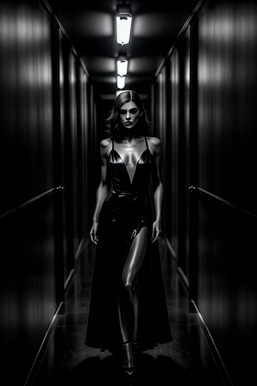
 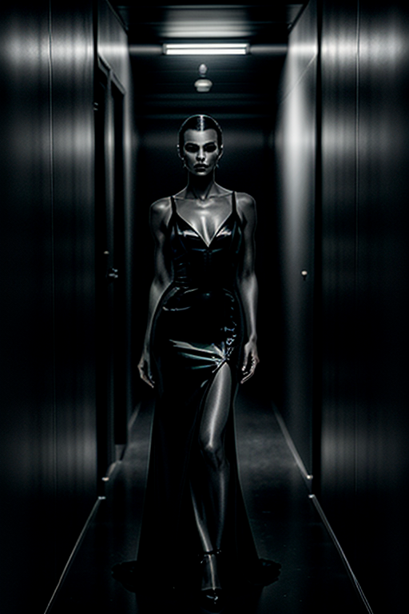
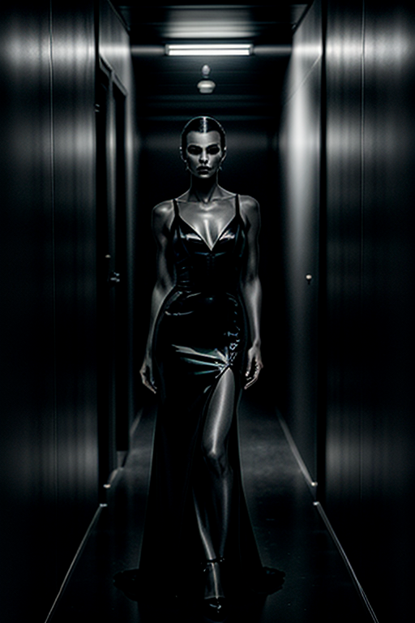
 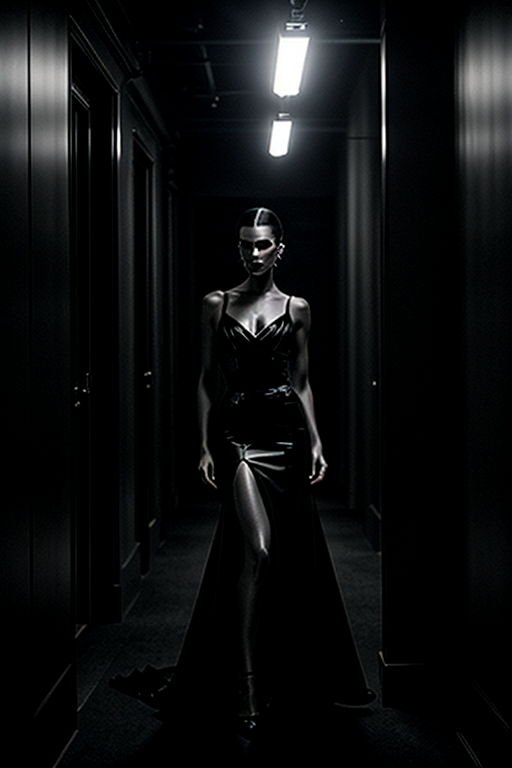
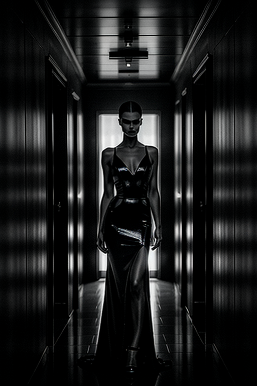
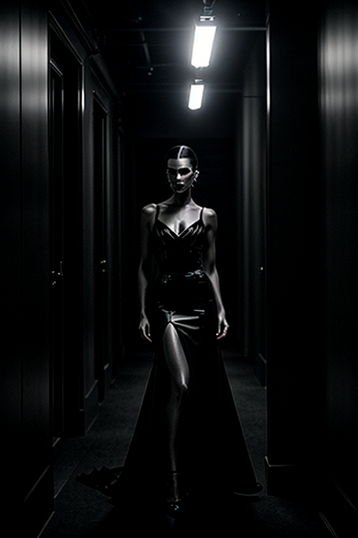
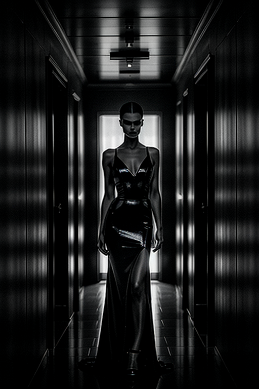


 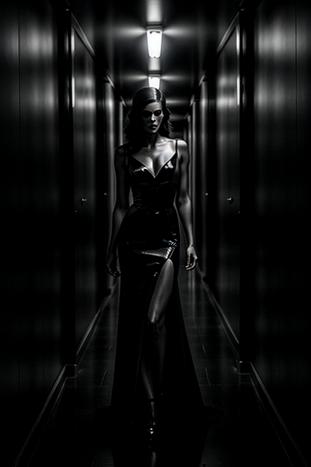
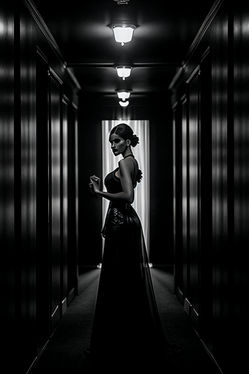
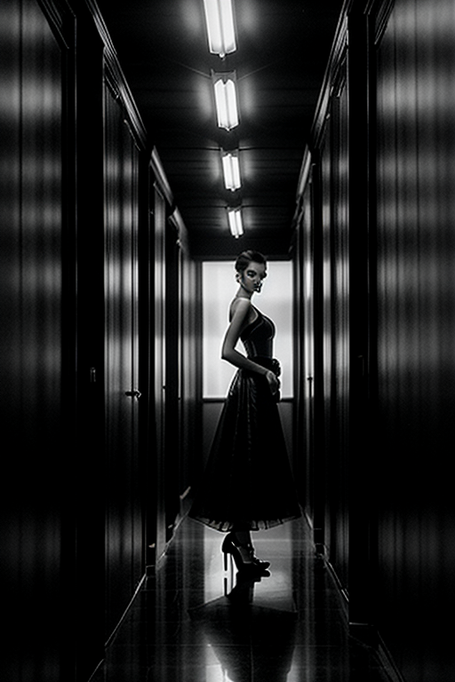
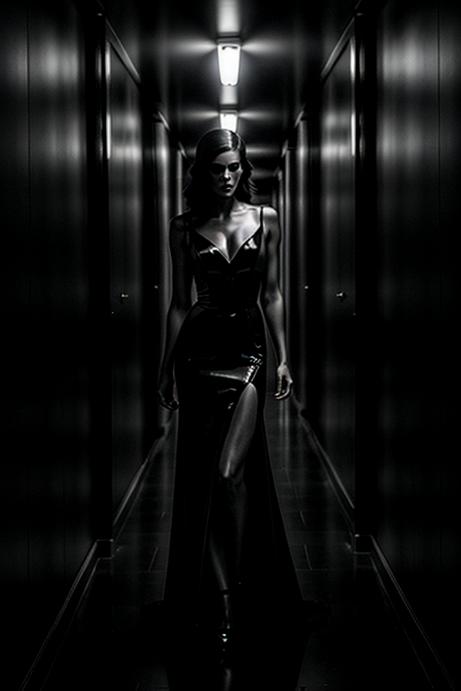
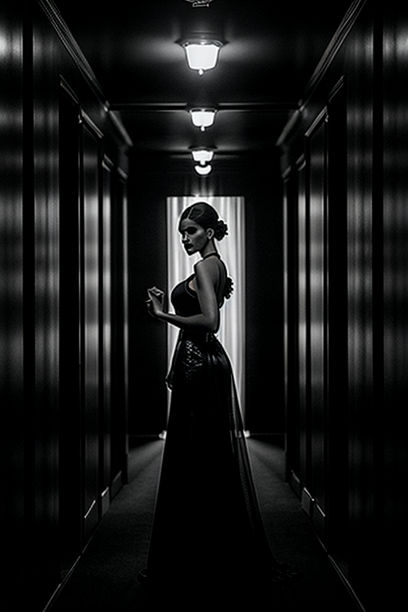
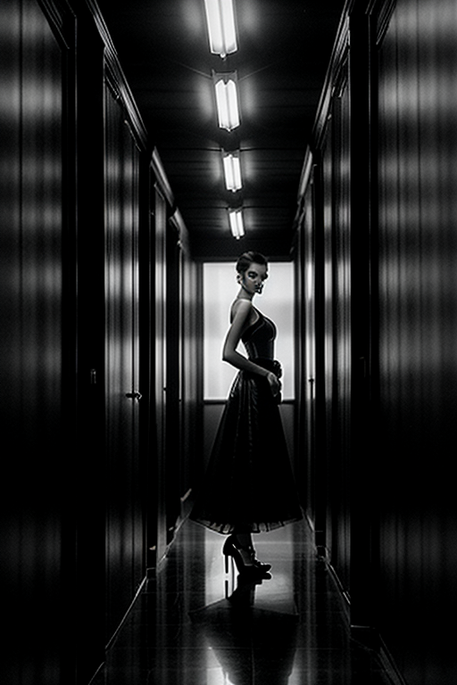


 -->
-->This gallery presents 20 curated images, including: how to take dark aesthetic pictures; page; page; page; page.